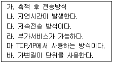
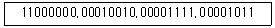
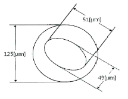
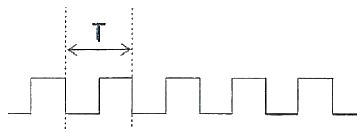
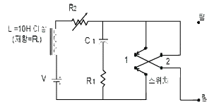
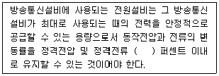
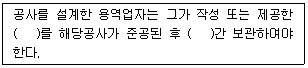

통신설비기능장 (2019-10-12 기출문제)
1과목: 임의 과목 구분(20문항)
1. 다음 중 디지털 변조가 아닌 것은?
- ASK
- FSK
- PSK
- DSB
(정답률: 92%)

2. 다음 중 다중화 방식에 해당하지 않는 것은?
- 공간분할 다중화
- 주파수분할 다중화
- 파장분할 다중화
- 패널분할 다중화
(정답률: 76%)
3. 전화 교환국의 전자교환시스템(Electronic Switching System) 시설에서 유지보수용으로 사용하는 프로그램이 아닌 것은?
- 호 처리 프로그램
- 장애 처리 프로그램
- 장애 진단 프로그램
- 운용 관리 프로그램
(정답률: 82%)
4. 전송하는 데이터 블록 앞에 특정 동기 문자인 'SYN'을 첨가하여 동기시키는 전송 방식은?
- 비트(bit) 동기 방식
- 문자(Character) 동기 방식
- 블록(Block)
- 플래그(Flag) 동기 방식
(정답률: 86%)
5. 데이터 교환방식 중 실시간 대화 형태의 응용분야에 적용이 어려운 방식은 무엇인가?
- 회선교환 방식
- 메시지교환 방식
- 데이터그램 방식
- 가상회선 방식
(정답률: 79%)
6. 다음 내용은 어떤 교환방식을 설명하는 것인가?

- 회선교환 방식
- 패킷교환방식
- 메시지교환방식
- 가상회선 방식
(정답률: 85%)
7. 다음 중 랜덤 신호에 대한 설명으로 가장 적합한 것은?
- 정현파 발진기에서 방생하는 발진 신호
- 확률, 통계에 의해서만 설명할 수 있는 신호
- 비주기적이며 과도적인 신호
- 함수의 형태로 표현될 수 있는 신호
(정답률: 76%)
8. 가입자의 발신, 통화 중 필요한 중계선 확인 등의 감시 기능을 하는 전자교환기의 장치는?
- 통화 스위치 회로망
- 주사 장치
- 중앙 제어 장치
- 일시 기억 장치
(정답률: 85%)
9. 다음 중 데이터 전송 방식에서 동기식의 특성이 아닌 것은?
- 데이터 블록의 앞에 동기문자가 사용된다.
- 한 묶음으로 구성하는 글자들 사이에는 휴지 간격이 없다
- 전송 속도가 보통 2,400[bps] 이상 중고속 전송에 사용한다.
- 동기는 글자 단위로 이루어진다.
(정답률: 75%)
10. 비동기 전송방식에서 수신단말기가 문자를 해석하여 처리하고 다음 문자를 수신할 수 있도록 준비시간을 제공하기 위해 사용하는 비트는 무엇인가?
- 시작 비트(Start Bit)
- 정지 비트(Stop Bit)
- 체크 비트(Check Bit)
- 패리티 비트(Parity Bit)
(정답률: 79%)
11. 수신기에서 수신주파수를 중간주파수로 변환하는 가장 큰 이유는?
- 혼신을 적게 하기 위해
- AFC를 깊게 하기 위해
- 스퓨리어스발사를 적게 하기 위해
- 선택도를 향상시키기 위해
(정답률: 83%)
12. CDMA 시스템의 가입자 용량은 기지국에서 수신된 간섭 신호의 양에 비례하기 때문에, CDMA 시스템의 최대 가입자 용량은 전력제어가 완벽하게 이루어질 때 가능하다. 이러한 전력제어에 대한 성명으로 바르지 않은 것은?
- 단말기가 기지국 가까이 위치하면 출력을 낮추고, 멀리가면 출력을 높임으로 제어한다.
- 전력제어를 통해 가입자의 수용 용량을 증대시킬 수 있다.
- 순방향 채널의 전력은 기지국이 해당 이동국의 통화 채널 할당 전력을 변화시키며 전력을 조절한다.
- 순뱡향 채널 전력제어는 셀 내의 모든 이동국이 동일 주파수를 사용하기 때문에 발생되는 근원 간섭문제를 해결하기 위해 이동국이 송신전력을 조절한다.
(정답률: 70%)
13. 이동통신에서 상관대역폭(Coherence Bandwidth)과 가장 관련이 깊은 것은?
- 음영효과
- 지연확산
- 안테나 이득
- 도플러 주파수
(정답률: 81%)
14. FDMA, TDMA, 또는 CDMA 방식에서 서로 다른 이동통신 교환국간 핸드 오프(Fand Off) 방식을 무엇이라 하는가?
- 하드 핸드 오프(Hard Hand Off)
- 소프트 핸드 오프(Soft Hand Off)
- 소프터 핸드 오프(Softer Hand Off)
- 소프트 핸드 오버(Soft Hand Over)
(정답률: 87%)
15. 다음 중 GPS(global positioning system) 위성에 대한 설명으로 옳지 않은 것은?
- 위성으로부터 전파를 수신해서 수신점의 위치, 이동 방향, 속도를 측정할 수 있다
- 4개의 궤도면에 12기 정지위성으로 구성되어 있으며 4시의 위성으로부터 신호를 수신하여 이용한다.
- 위치 정보와 지도 정보를 조합해서 자동차용 자동 운항 시스템에 이용된다.
- 위성에 탑재된 세슘 원자 시계를 기준으로 동기를 맞추고 위치 정보를 계산한다.
(정답률: 90%)
16. 국내 이동통신사에서 사물인터넷으로 사용하지 않는 기술은?
- 로라(LoRa)
- LTE-M(Machine Type Communication)
- NB-IoT(Narrow Band IoT)
- 시그폭스(SigFox)
(정답률: 82%)
17. 송신국 A의 안테나의 높이는 980[m]이고, 수신국 B의 높이는 420[m]일 때 직접파가 전달될 수 있는 거리 약 몇 [Km]인가?
- 185[Km]
- 213[Km]
- 385[Km]
- 426[Km]
(정답률: 59%)
18. 전송선로에 발생하는 전압 정재파가 '1'일 때 전송선로에 실리는 것은?
- 정재파
- 반사파
- 진행파
- 반사파+진행파
(정답률: 76%)
19. 다음 중 무선통신 송신기의 조건으로 옳지 않는 것은?
- 전력 효율이 높아야 한다.
- 출력 전력이 변동이 커야 한다.
- 점유 주파수 대역이 적은 것이 좋다.
- 발사 전파의 주파수 안정도가 높아야 한다.
(정답률: 81%)
20. 다음 중 야기안테나에 관한 설명으로 잘못된 것은?
- 반사기, 투사기, 도파기로 구성되어 있다.
- 지향특성은 8자 지향성이다.
- 방송수신용 안테나로 사용된다.
- 도파기 수를 증가시키면 이득을 높일 수 있다
(정답률: 83%)
2과목: 임의 과목 구분(20문항)
21. 다음 중 정보보호 관리체계의 위험 관리 5단계 과정 중 3단계에 해당되는 것은?
- 전략 및 계획 수립
- 정보보호 계획수립
- 위험평가
- 위험분석
(정답률: 75%)
22. 다음 중 근거리 통신망(local area network)에 사용하는 전송 매체가 아닌 것은?
- 꼬임선
- 평행 나선 케이블
- 동축 케이블
- 광섬유
(정답률: 72%)
23. IPv4 주소체계에서 보기의 2진 표현을 10진수로 올바르게 표현한 것은?

- 192.36.30.21
- 192.36.30.22
- 192.18.15.12
- 192.18.15.11
(정답률: 92%)
24. 네트워크의 내부와 외부 사이에 위치하여 방화벽 및 네트워크 캐시역할을 수행하는 서버는 무엇인가?
- Proxy 서버
- Web 서버
- DNS 서버
- Telnet 서버
(정답률: 87%)
25. IPsec(Internet Protocol Security)은 네트워크 계층에서 보안성을 제공하는 표준화된 기술이다. 다음 중 IPsec가 제공하는 기술이 아닌 것은?
- 생산성
- 암호화
- 데이터 무결성
- 통신 상대방 인증
(정답률: 68%)
26. IPv4 헤더 포맷을 구성하는 필드가 아닌 것은?
- Time To Live
- Type of Service
- Header Checksum
- Flow Label
(정답률: 77%)
27. 침입탐지시스템(IDS)의 기능이 아닌 것은?
- 경보 기능
- 주소변환 기능
- 셔닝 기능
- 사용자 프로그램 실행
(정답률: 62%)
28. Bootp 프로토콜과 유사하며 동적으로 IP 주소를 할당하는 기능을 정의하는 프로토콜은?
- UDP
- DHCP
- ICMP
- IGMP
(정답률: 74%)
29. 다음 중 개인 정보를 보호하는 방법이 아닌 것은?
- 타인이 자신 명의로 회원가입 시 개인정보 침해 신고센터에 신고한다
- 개인정보를 제공할 때는 개인정보취급방침과 약관을 자세히 확인한다.
- 회원가입 시 주민등록번호 대체수단을 이용하고 본인 확인을 위해 필요하지 않은 개인정보도 같이 입력한다.
- 인터넷에 올리는 자료에 개인정보가 포함되지 않도록 하며, 공유폴더에 개인정보 파일이 저장되지 않도록 한다,
(정답률: 92%)
30. 다음은 BcN(broadband convergence network) 적용 프로토콜 중 H.323에 관한 기술 내용이다. 맞지 않는 것은?
- QoS가 보장되지 않는 랜상에서 실시간 음성, 데이터, 비디오를 전송하는 표준
- 외부의 콜 에이전트에 의해 게이트웨이를 제어하기 위한 표준
- 터미널, 게이트웨이,게이트키퍼 및 MCU 간의 프로토콜
- ITU-T SG16에서 표준화
(정답률: 57%)
31. 다음 중 인터네트워킹의 동적 라우팅(Dynamic Routung)에 대한 설명으로 틀린 것은?
- 관리가 편리하고 복잡한 네트워크에 적합하다.
- 경로가 바뀌면 라우팅 프로토콜은 자동으로 라우팅 테이블을 갱신한다.
- IP 기능으로 라우팅 테이블을 직접 작성, 갱신하고 작은 규모의 네트워크에 적합하다.
- 규모가 큰 네트워크에서 서로 알려져 있는 네트워크의 IP 라우터의 라우팅 테이블을 서로 교환하는 방식이다.
(정답률: 66%)
32. 전송선로의 특성 임피던스가 50[Ω]이고, 부하저항이 200[Ω]일 때, 이 전송계의 전압 정재파비는 얼마인가?
- 1
- 2
- 3
- 4
(정답률: 86%)
33. 접속점에서 특성임피던스가 다른 전송선로의 지점에서 신호파가 입력측에 되돌아오는 현상을 반사현상이라고 한다. 반사현상에 대한 설명으로 틀린 것은?
- 입사파와 반사파의 비를 통해 반사계수를 구할 수 있다.
- 신호파의 파장이 짧을수록 발생하기 쉽다.
- 입력 임피던스가 출력 임피던스와 같을 때 발생한다.
- 동일한 파장의 경우는 특성 임피던스의 불균등이 클수록 심해진다.
(정답률: 79%)
34. 다음 중 광 케이블 모드의 종류가 아닌 것은?
- 계단형 단일모드
- 계단형 다중모드
- 언덕형 단일모드
- 언덕형 다중모드
(정답률: 78%)
35. 다음 중 동축케이블에서 특성 임피던스가 가장 좋은 것은? (단, d : 내부 도체의 직경, D : 외부 도체의 직경)
- d=4[mm], D=8[mm]
- d=2[mm], D=8[mm]
- d=1[mm], D=3[mm]
- d=3[mm], D=10[mm]
(정답률: 84%)
36. 다음 그림의 광섬유 코어의 비원율을 계산하여 광섬유 케이블이 선로 포설용으로 가능한지 여부에 대한 설명으로 옳은 것은? (단, 클래딩의 직경은 125[μm]이고, 코어경이 찌그러져 최대 직경이 51[μm]이고, 최소 직경은 49[μm], 광섬유 심선의 코어의 표준 규격직경은 50[μm]이다.)

- 비원율 : 7[%], 코어의 허용 비원율은 10[%] 이하이므로 불가능하다
- 비원율 : 6[%], 코어의 허용 비원율은 9[%] 이하이므로 가능하다
- 비원율 : 5[%], 코어의 허용 비원율은 7[%] 이하이므로 불가능하다
- 비원율 : 4[%], 코어의 허용 비원율은 5[%] 이하이므로 가능하다
(정답률: 85%)
37. 다음 중 광섬유의 도파 원리에 대한 설명으로 옳은 것은?
- 스넬 법칙 – 전반사
- 스넬 법칙 – 굴절
- 페러데이 법칙 – 전자기 유도
- 렌쯔의 법칙 – 전자기 유도
(정답률: 82%)
38. 광섬유의 규격화 주파수(Normalized Frequency)에 대한 설명으로 적합한 것은?
- 규격화 주파수 값은 파장이 커지면 커진다.
- 규격화 주파수 값은 굴절률과는 무관하다,
- 규격화 주파수 값을 작게 만들려면 코어 반경이 작아야 한다.
- 광섬유가 단일모드가 되기 위해서는 규격화 주파수 V가 V ＞2.4⑤가 되어야 한다.
(정답률: 61%)
39. ITU-T 표준에 구정하고 있는 광파장대역 중 새로이 전송대역으로 확장 사용하고 있는 “S밴드”의 파장은?
- 1.260 ~ 1.360 [nm]
- 1.360 ~ 1.460 [nm]
- 1.460 ~ 1.530 [nm]
- 1.530 ~ 1.565 [nm]
(정답률: 65%)
40. 유선 네트워크 환경에서 전송계층(TCP)의 문제를 분석하기 위해 필요한 측정 장비로 가장 적합한 것은?
- 프로토콜 분석기
- 오실로스코프
- 벡터스코프
- 스펙트럼 분석기
(정답률: 79%)
3과목: 임의 과목 구분(20문항)
41. FM송신기에서 최대 주파수 편이가 70[kHz]이고, 변조 신호 주파수가 5[kHz]인 경우 대역폭은 몇 [kHz]인가?
- 65
- 75
- 130
- 150
(정답률: 68%)
42. 스마트폰 등에 저장된 사진이나 영상 등을 네트워크 케이블이 연결된 TV에서 감상하거나, 와이파이로 연결된 스마트폰의 사진을 PC나 TV에서 네트워크를 통해 감상하거나 저장할 수 있는 기술은?
- 로컬 디밍(Local Dimming)
- DTS(Digital Theater System)
- MHL(Mobile High-Definition Link)
- DLNA(Digital Living Network Alliance)
(정답률: 79%)
43. 특성임피던스가 75[Ω]인 급전선상의 전압정재파비(VSWR)가 4이면 반사계수는 얼마인가?
- 0.2
- 0.4
- 0.6
- 0.8
(정답률: 58%)
44. 아래 클럭(Clock) 신호의 주파수가 100[MHz]라고 할 때, 주기(T)는 얼마인가?

- 1[ns]
- 10[ns]
- 100[ns]
- 1[㎲]
(정답률: 85%)
45. 다음 중 전송선로에 부정합이 존재할 경우의 현상으로 틀린 것은?
- 반사에 의하여 전송손실의 증가 원인이 된다.
- 불균등 반사 손실을 가져온다.
- 간접누화의 원인이 된다.
- 2선식 음성회선의 경우 명음 안정도가 높아진다.
(정답률: 83%)
46. 전압의 측정 범위를 넓히기 위하여 사용하는 것은?
- 배율기
- 분류기
- 분압기
- 변류기
(정답률: 84%)
47. 다음 그림은 단말장치의 시험과정에서 사용하기 위한 의사회로이다. C1의 값과 R1의 값이 맞는 것은?

- C1=500[uF], R1=600[Ω]
- C1=300[uF], R1=300[Ω]
- C1=100[uF], R1=975[Ω]
- C1=50[uF], R1=50[Ω]
(정답률: 64%)
48. 다음 중 정보통신공사 예정가격의 결정기준과 관계없는 것은?
- 적정한 거래가 형성된 경우에는 그 거래실례가격
- 원가계산에 의한 가격
- 실적공사비에 의한 가격
- 협상에 의한 견적가격
(정답률: 83%)
49. 다음 괄호 안에 들어갈 내용으로 가장 적합한 것은?

- ±1
- ±5
- ±10
- ±20
(정답률: 84%)
50. 정보통신설비공사의 설계도서에 대한 설명으로 ()안에 알맞은 것은?

- 실시설계도서, 3년
- 실시설계도서, 5년
- 준공설계도서, 3년
- 준공설계도서, 5년
(정답률: 63%)
51. 국가와 지방자치단체가 방송통신의 공익성·공공성에 기반한 공적 책임을 완수하기 위하여 노력하여야 할 사항이 아닌 것은?
- 건전한 방송통신문화 창달 및 올바른 방송통신 이용환경 조성
- 방송통신기술 개발과 국산화 및 수출 장려
- 사회적 소수 또는 약자계층 등의 방송통신 소외 방지
- 방송통신을 이용한 미디어 환경의 다원성과 다양성의 활성화
(정답률: 87%)
52. 다음 중 “단말장치 기술기준”에서 정하는 용어의 정의가 잘못된 것은?
- “전화용설비”란 방송통신사업에 제공하는 방송통신설비로서 주로 음성의 전송·교환을 목적으로 하는 방송통신서비스에 제공하는 것을 말한다.
- “종전압”이라 함은 2선식 접속에서는 팁과 링단자 간, 4선식 접속에서는 팁과 링 단자 간 및 팁1과 링1 단자 간의 전위차를 말한다.
- “구내자동착신(DID) 인터페이스“라 함은 외부로부터 구내 교환기에 접속된 단말장치와 통신하고자 할 경우에 구내교환원을 통하지 아니하고 직접 다이얼링하여 호출할 수 있도록 구성된 접속을 말한다.
- “전화접속” 이라 함은 2선식 접속에서는 방송통신망의 팁과 링단자와의 접속을 말하며, 4선식 접속에서는 방송통신망의 팁과 링단자(방송통신망측으로의 송신용) 및 팁1과 링1단자(방송통신망측으로부터의 수신용)와의 접속을 말한다.
(정답률: 67%)
53. 방송통신설비 등을 직접 설치·보유하고 방송통신서비스를 제공하는 방송통신사업자가, 방송통신서비스를 안정적으로 제공하기 위하여 정하는 방송통신설비의 관리 규정에 포함이 되어야 할 사항이 아닌 것은?
- 방송통신설비 관리조직의 구성. 직무 및 책임에 관한 사항
- 방송통신설비의 시험에 관한 사항
- 방송통신설비 장애 시의 조치 및 대책에 관한 사항
- 방송통신서비스 이용자의 통신비밀보호대책에 관한 사항
(정답률: 69%)
54. 다음 중 “정보통신공사업법”에서 정한 정의로 틀린 것은?
- “정보통신설비”란 유선, 무선, 그 밖의 전기적 방식으로 음성 또는 영상 등의 정보를 저장·제어·처리하거나 송수신하기 위한 유선설비를 말한다.
- “정보통신공사”란 정보통신설비의 설치 및 유지·보수에 관한 공사와 이에 따른 부대공사를 말한다.
- “하도급”이란 도급받은 공사의 일부에 대하여 수급인이 제 3자와 체결하는 계약을 말한다.
- “정보통신기술자”란 국가기술자격법 에 따라 정보통신 관련분야의 기술자격을 취득한 사람과 정보통신설비에 관한 기술 또는 기능을 가진 사람으로서 과학기술정보통신부장관의 인정을 받은 사람을 말한다.
(정답률: 70%)
55. 방송통신서비스에 사용되는 방송통신설비가 갖추어야 할 안전성 및 신뢰성에 관한 설비의 일반기준 항목과 관계없는 것은?
- 대체접속계통의 설정
- 전송로별 AS센터 구성
- 분산수용
- 전송로설비의 동작 감시
(정답률: 84%)
56. 다음 중 공정흐름도에서 사용되는 기호의 명칭이 아닌 것은?
- 가공
- 운반
- 휴식
- 저장
(정답률: 80%)
57. 다음 중 설비의 성능 열화의 원인과 관련없는 것은?
- 사용에 의한 열화
- 재해에 의한 열화
- 자연 열화
- 고장에 의한 열화
(정답률: 69%)
58. 다음 중 샘플링 방법으로 적당하지 않은 방법은?
- 직접 샘플링
- 랜덤 샘플링
- 층별 샘플링
- 2단계 샘플링
(정답률: 70%)
59. 제조공정에서 주문이나 생산을 의뢰받은 뒤 제품생산을 완료할 때까지의 소요되는 시간은?
- 어택 타임(attack time)
- 코어타임(Core time)
- 오버 타임(Over Time)
- 리드 타임(lead time)
(정답률: 81%)
60. 다음 중 제조업에서 평균화전략을 추진해야 하는 경우는?
- 가용 노동력이 풍부할 경우
- 재고의 수명주기가 짧은 경우
- 재고유지비용이 높은 경우
- 생산설비가 자동화된 경우
(정답률: 72%)